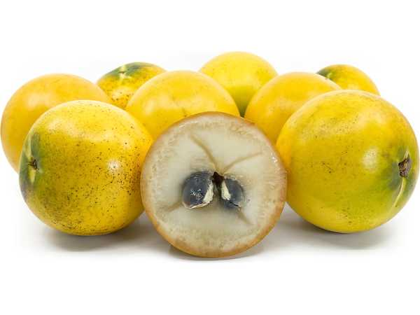

Pouteria caimito
Common Names: Abiu, Abiú, Caimito (not to be confused with star apple)
Local Name: Abiú (Portuguese/Brazilian)
Family: Sapotaceae
Origin: Amazon Basin (Peru, Brazil, Colombia)
Plant Type: Perennial evergreen tree
Variety: Round and elongated fruit forms
Average Lifespan: 30–50 years
| Growth Habit | Medium evergreen tree with upright to spreading canopy |
| Plant Size | 8–15 meters tall; canopy spread 5–8 meters |
| Leaves | Alternate, simple, oblong-elliptic, 10–20 cm long, glossy dark green |
| Flowers | Small, tubular, greenish-white, borne in clusters in leaf axils |
| Flower Characteristics | Inconspicuous; 5-lobed corolla; self-fertile |
| Fruit | Round to oval, 5–10 cm, smooth thin skin, translucent creamy-white flesh with caramel flavour |
| Fruit Color | Bright golden yellow when ripe |
| Seed Characteristics | 1–4 glossy brown seeds; oblong, 2–3 cm long |
| Root System | Deep taproot with lateral spreading roots |
| Climate | Tropical lowland; frost-intolerant; needs warm humid conditions |
| Temperature Range | 22–35°C ideal; damaged below 5°C |
| Rainfall Requirement | 1500–3000 mm annually; consistent moisture |
| Soil Type | Deep, well-drained, fertile soil rich in organic matter |
| Soil pH Preference | 5.5–6.5 |
| Sun Requirement | Full sun (6+ hours daily) |
| Spacing | 6–8 meters between trees |
| Irrigation Method | Drip irrigation; consistent moisture during fruiting |
| Water Requirement | Moderate to high; does not tolerate drought |
| Can it Grow in Pots? | Young trees in large containers (40+ liters); limited long-term |
| Fertilizer Schedule | Every 2–3 months during growing season |
| Recommended Organic Fertilizers | Compost, well-rotted manure, fish emulsion, seaweed extract |
| Pesticide Frequency | Minimal; generally pest-resistant |
| Recommended Organic Pesticides | Neem oil, fruit fly traps |
| Mulching Practice | Thick organic mulch to retain moisture |
| Training System | Open centre; allow natural form |
| Pruning Time | After harvest |
| How to Prune | Light pruning to maintain shape; remove dead wood |
| Common Pests | Fruit fly, birds, Caribbean fruit fly |
| Common Diseases | Anthracnose, algal leaf spot |
| Disease Prevention & Remedies | Good air circulation, copper fungicide, remove fallen fruit |
| Flowering Months | Year-round in tropics; peaks in warm wet season |
| Fruiting Season | Year-round with peaks; 3–4 months after flowering |
| Days to Harvest | 90–120 days from flowering |
| Harvest Indicators | Fruit turns bright golden yellow, slightly soft when pressed |
| Average Yield per Plant | 50–100 kg per tree per year (mature tree) |
| Pollination Type | Self-pollination; insect-assisted |
| Pollination Notes | Self-fertile; bees improve fruit set |
| Pollination Details | Self-fertile; small insects pollinate the inconspicuous flowers |
| Propagation by Seeds | Fresh seeds germinate in 2–4 weeks; seedlings fruit in 3–5 years |
| Propagation by Cuttings | Air layering possible; semi-hardwood cuttings with rooting hormone |
| Propagation by Grafting | Grafting on Pouteria rootstock for improved varieties; fruits in 2–3 years |
| Water Usage | Moderate; efficient with mulching |
| Soil Conservation Practices | Canopy provides shade; leaf litter enriches soil |
| Organic Practices Used | Minimal chemical inputs; naturally pest-resistant |
| Companion Plants | Cacao, banana, other tropical fruit trees |
| Biodiversity Benefits | Fruit attracts birds and bats; supports tropical ecosystem |
| Commercial Production Regions | Brazil, Peru, Colombia, Hawaii, Australia (Queensland) |
| Market Uses | Fresh fruit, specialty markets |
| Processing Uses | Ice cream, smoothies, desserts; limited processing due to delicate flesh |
| Market Value (Approx.) | $5–15 per kg (specialty markets); premium exotic fruit |
| Symbolism | Treasured Amazonian fruit; symbol of tropical abundance |
| Traditional Uses | Fruit eaten fresh; latex from unripe fruit used traditionally to treat pulmonary ailments |
| Calories | 95 kcal per 100g |
| Dietary Fiber | 1.0 g per 100g |
| Vitamin C | 10–15 mg per 100g |
| Vitamin A | 130 IU per 100g |
| Iron | 0.2 mg per 100g |
| Potassium | 120 mg per 100g |
| Antioxidants | Carotenoids, phenolic compounds |
| Other Key Nutrients | Calcium, phosphorus, niacin |
| Anxiety & Sleep | Not a primary use |
| Immune Support | Vitamin C and antioxidants support immunity |
| Anti-inflammatory Properties | Latex traditionally used for respiratory inflammation |
| Heart Health | Antioxidant content supports cardiovascular health |
| Digestive Health | Smooth flesh is easily digestible; gentle on stomach |
Disclaimer: Information provided is for educational purposes only and not a substitute for medical advice.
Add your field observations here.